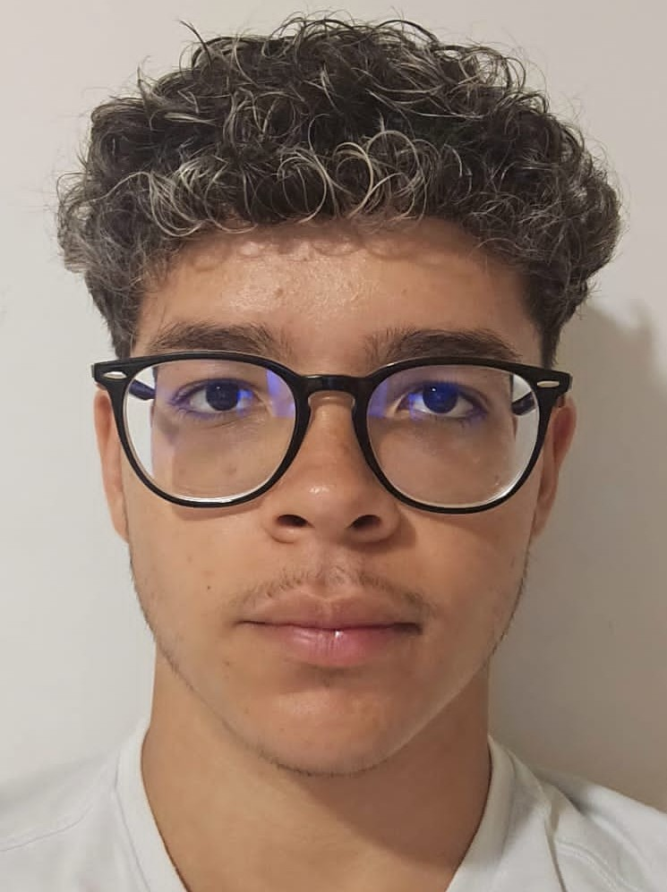

FELIPHE DAL COL SOARES
Santa Maria de Jetibá - ES
(27) 99773-7153
feliphe.dalcol@gmail.com

PERFIL PROFISSIONAL
Proativo, esforçado, com facilidade em aprender, bom relacionamento com os colegas de equipe e clientes, sempre transparente e honesto. Possuindo a pretensão de sempre seguir estudando, aperfeiçoando cada vez mais na área de atuação e em outras relacionadas, e ainda buscando a qualificação e aperfeiçoamento profissional, contribuindo para o crescimento e bem-estar geral.
OBJETIVO
Ajudar na criação e implementação de sites, com foco na objetividade e na pontualidade, para com os clientes.
QUALIFICAÇÕES
- HTML
- CSS
- JavaScript
FORMAÇÃO
Cursando Ensino Superior - Ciências da Computação